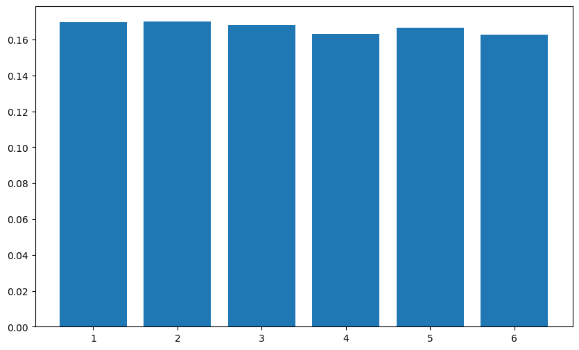
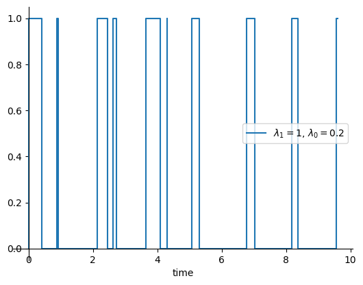

אותות אקראיים#
אמ;לק
תהליך אקראי (או אות אקראי) הוא אוסף משתנים מקריים. יכולה להיות לכולם את אותה התפלגות או לא ויכולות גם להיות תלויות בינהם.
שתי הנחות שאנחנו הולכים להניח על כל אות מסוף פרק זה והלאה:
1. סטציונריות במובן הרחב
נאמר שאות אקראי \(x\left(t\right)\) הוא סטציונרי במובן הרחב אם:
הממוצע שלו לאורך זמן קבוע - \(\mu_{x}\left(t\right)=\mathbb{E}\left[x\left(t\right)\right]=\underset{\text{עובק}}{\underbrace{\mu_{x}}}\)
האוטוקורלציה שלו תלויה רק בהפרשי זמן - \(R_{x}\left(t_{i},t_{j}\right)=R_{x}\left(t_{i}-t_{j}\right)\)
2. ארגודיות
נאמר שאות ארגודי אם ממוצע לאורך זמן הוא כמו ממוצע של הרבה מדידות חוזרות (ראליזציות)
כלומר:
את האוטוקורלציה הגדרנו להיות:
כלומר כמה האות דומה לעצמו בהזזה של \(\tau\). אם אנחנו מניחים ארגודיות וסטציונריות ממש אפשר לחשב אוטוקורלציה כמו “שהיינו רוצים”
ראינו שלוש תכונות חשובות של הקורלציה:
קישור להתפלגות בכל רגע - R_{x}\left(0\right)=\sigma_{x}^{2}+\mu_{x}^{2} כלומר מתארת את הספק האות האקראי בתור חיבור של הממוצע בריבוע וסטיית התקן בריבוע
מקסימום מתקבל ב-0 - \forall\tau>0:\left|R_{x}\left(\tau\right)\right|\le R_{x}\left(0\right)
סימטרית (יוניטרית) - R_{x}\left(-\tau\right)=R_{x}^{\ast}\left(\tau\right)
נתחיל לחקור את היצור המתמטי הזה שנקרא אות אקראי. דרך אחת לא מאוד שימושית לאפיין אותו היא לומר שיש לנו אנסמבל (אינסופי) עם כל האפשרויות השונות לאותות ולכל אחד מהם הסתברות (או צפיפות הסתברות). ממש קשה לעבוד עם אובייקט כזה. והוא מאוד מאוד כללי.
במקום זה נתחיל מלהסתכל על זמן מסויים \(t_{i}\) ולשאול מה הערכים האפשריים של הרעש שם.
משתנה אקראי#
אם היינו מבצעים הרבה מאוד ניסויין ומסתכלים רק על הtאות האקראי (הרעש) בזמן \(t_{i}\) היינו מקבלים המון ערכים שונים. נקרא להם \(x\left(t_{i}\right)\). זה ממש כמו הטלות של קובייה רק שיש לנו טווח ערכים רציף. נוכל לאפיין את הסטטיסטיקה של הערכים על ידי פונקציית צפיפות הסתברות.
באופן כללי ל\(x\left(t_{i}\right)\) נקרא משתנה אקראי.
מה זה פונקציית צפיפות הסתברות?
משתנה אקראי \(X\) יהיה מאופיין על ידי פונקציית צפיפות הסתברות \(p_{X}\left(x\right)\) אשר אומרת מה הסיכוי למדוד את המשתנה האקראי בטווח ערכים מסויים. כלומר:
נדרוש שתי תכונות:
חיוביות - \(p_{X}\left(x\right)\ge0\)
נרמול - \(\intop_{\Omega}p_{X}\left(x\right)dx=1\)
כאשר הכוונה ב\(\Omega\) היא כל תחום הערכים של \(X\). לרוב יהיה \(\intop_{-\infty}^{\infty}p_{X}\left(x\right)dx=1\)
דוגמא - התפלגות נורמלית
פונקציית צפיפות הסתברות שנעבוד איתה הרבה והיא מאוד מאוד מאוד נפוצה היא גאוסיין. (לפעמים נקראת נורמלית)
כאשר \(\mu\) היא הערך הממוצע ו\(\sigma\) הסטיית תקן. מוזמנים לשחק עם הערכים כדי לראות אי ך הפונקצייה נראית. את ההתפלגות הנורמלית של ממוצע 0 וסטיית תקן 1 ציירתי בשחור
לפתיחה בחלון נפרדמה מתפלג ככה? האמת שכמעט הכל (יש לזה סיבות טובות). לדוגמה גובה של אנשים:

מתוך הגרף הזה אתם יכולים לחשב לדוגמה מה הסיכוי שהגובה של גבר או אישה רנדומלים בעולם הם בין 170-175 . זה פשוט לחשב אינטגרל (או לשאול מה השטח מתחת לגרף)
נרצה עכשיו להרחיב את ההגדרה של משתנה אקראי לתהליך אקראי או אות אקראי. נצטרך עכשיו לתת הסתברות לכל אפשרות. כלומר תהיה לנו פונקצייה \(\underset{\text{תפתושמ}-\text{תוגלפתה}}{\underbrace{p_{x\left(t\right)}\left(x_{1},x_{2},x_{3},...;t_{1},t_{2},t_{3},...\right)}}\) אשר מגדירה מה הסיכוי לאות מסויים:
זה מאוד לא שימושי, בעיקר שהאות שלנו הוא רציף ולא בדיד הרבה פעמים. נניח שתי הגדרות שמאוד יקלו על ההגדרה והניתוח של האות האקראי. הן לא מתקיימות תמיד אבל כן לרוב.
סטציונריות הגדרה מחמירה#
נתחיל מהגדרה מחמירה של מה זה אות סטציונרי. נראה קצת דוגמאות וניקח הגדרה פחות מחמירה בהמשך.
נגדיר אות כסטציונרי (במובן הצר) אם פונקציית צפיפות ההסתברות שלו לא משתנה בזמן. כלומר:
ובפרט עבור משתנה זמן בודד:
מה זה אומר? במילים פשוטות זה אומר שאם תתחילו מדידה של האות בזמן כלשהו למשך זמן כלשהו הסטטיסטיקה לא תהיה תלוייה בזמן התחלת המדידה. שימו לב שזה נכון גם למדידה של מספר אחד ולכן בפרט הממוצע וסטיית התקן לא משתנות בזמן. (זאת הולכת להיות ההגדרה שלנו בהמשך + פרט קטן).
דוגמאות לאותות שהם לא סטציונרים:
התמפרטורה בחדר הזה - אם תמדדו בלילה או ביום תקבלו סטטיסטיקות שונות מאוד
הרעש מחוץ לחלון הדירה שלי. במהלך היום יש תחב”צ ובפרט הרעש נמוך יותר בשבתות
נשים לב שזה שיש “שינוי” או אירועי קיצון לא אומר שהאות לא סטציונרי. זה רק אומר שאירועים כאלו הם חלק מהסטטיסטיקה. מה שהופך את הדוגמאות קודם ללא סטציונרים זה שיש “חוקיות” לשינוי של הסטטיסטיקה. לדוגמה בלילה וביום. שימו לב שגם אם לא הייתי יודע שקיימים יום ולילה הייתי יכול לחשב את ממוצע הטמפרטורה לאורך זמן ולראות מגמה מחזורית מובהקת. והסיכוי לקבל מגמה כזו מובהקת במקרה הוא מאוד מאוד נמוך.
דוגמאות לאותות סטציונרים:
רעש טרמי (בהינתן שהטמפרטורה קבועה) - התפלגות המהירויות של החלקיקים נשארת קבועה אם הטמפרטורה קבועה. ולכן גם הזרמים שהם יוצרים
רעש שוט (בהנחה שהזרם נשאר קבוע)
רעש מתפרץ - רעש שקופץ בין שני ערכים כאשר כמות המעברים מתפלגת פואסונית
תנועה של חלקיק בדיפוזיה
חשוב להדגיש שתהליך אקראי הוא לא תמיד רעש אבל אותנו מעניינים רעשים. תהליך אקראי לדוגמה שאינו רעש הוא ירי של ניורונים במוח שלנו.
ארגודיות#
התכונה השנייה שנניח על התהליכים האקראיים שלנו היא קצת יותר קשה לתפיסה. בגדול היא אומרת ש:
ממוצע לאורך זמן הוא כמו ממוצע של הרבה מדידות חוזרות (ראליזציות)
בנוסחה זה אומר ש:
מה זה אומר בכלל. אתם רגילים ששני הביטויים האלו הם פשוט סימונים שונים של הממוצע. מה שזה אומר הוא ש:
כלומר הממוצע של האות הוא גם הממוצע לאורך זמן. (אנחנו נניח שבהגדרה של ארגודיות הממוצע לאורך זמן לא תלוי בזמן ההתחלה, כלומר האות סטציונרי)
איך בכלל שני הדברים האלו יכולים להיות שונים? נשים לב שהם צריכים להיות שווים רק בגבול של זמן ארוך. כלומר גם אם חישוב הממוצע לוקח המון זמן זה לא משנה.
דוגמה שממחישה למה הם יכולים להיות שונים היא הדוגמה הבאה:
נניח שיש לנו 2 קוביות על השולחן. אחת עם 6 פאות ואחת עם 12. כלומר הממוצע של הראשונה הוא 3.5 ושל השנייה הוא 6.5. התהליך האקראי הוא לקחת קוביה אקראית ולזרוק אותה אינסוף פעמים. המספרים שיוצאים הם התהליך האקראי שלנו. למה זה לא ארגודי?
צריך להבין מה הממוצע של התהליך. הממוצע מוגדר על הרבה חזרות של התהליך. כאשר בחצי מהפעמים נבחר את הקוביה הראשונה ובחצי את הקובייה השנייה. הממוצע יצא לנו \(\frac{3.5+6.5}{2}=5\) אבל אם ניקח ניסוי אחד לאורך הרבה זמן ונחשב את הממוצע יצא לנו או \(3.5\) או \(6.5\).
המסקנה היא:
אם אנחנו התהליך יכול להיות תהליך שונה בכל פעם וזה נקבע בהתחלה, אז כנראה שהוא לא ארגודי
יכולות להיות הרבה דוגמאות לזה. אבל תנסו לדמיין שאנחנו מודדים בעזרת מכשיר מדידה רעש אבל יכול להיות שיש פגם במכשיר. אז מה שבאמת צריך לעשות הוא לדגום בעזרת הרבה מכשירים.
או יש פאזה התחלתית בדוגם שיכולה להגביר או להחליש את הרעש והיא נקבעת על פי זמן ההדלקה של המכשיר אז אנחנו יכולים להיות בבעיה.
יש עוד דוגמאות מעניינות ממש בפיזיקה אבל לא ניכנס לזה כאן.
למה ארגודיות חשובה לנו בכלל? היינו רוצים לומר שאם הממוצע של האות לא תלוי בזמן (סטציונריות) אז ה מספיק. הבעיה היא שלרוב במדידה אמיתית תהיה לנו רק ריאליזציה אחת של הרעש. ולכן אם נחשוב שהממוצע של הרעש הוא הממוצע מהתכונה הסטציונרית נוכל לטעות ולחשוב שזה הממוצע בכל קטע מספיק ארוך של זמן.
לרוב נניח שאות גם ארגודי בסטיית התקן שלו ובפונקציית האוטוקורלציה שלו (עוד על זה בהמשך).
אפיון של האות האקראי#
הבינתן שיש לנו דגימה של האות האקראי והוא סטציונרי וארגודי נוכל להתחיל לחשב תכונות שלו:
ממוצע - \(\mu_{x}=\intop_{-\infty}^{\infty}x\cdot\mathbb{P}\left(x\right)dx=\lim_{T\rightarrow\infty}\frac{1}{T}\intop_{0}^{T}x\left(t\right)dt\)
סטיית תקן - כמה אנחנו רחוקים מהממוצע בממוצע
איך נחשב?
נשים לב שבמקרה שלנו האות \(x\left(t\right)^{2}\) הוא לרוב בעל משמעות של הספק (אם האות שלנו הוא אמפליטודה של גל) ולכן אפשר לחשוב על \(\left\langle x\left(t\right)^{2}\right\rangle \) בתור ההספק הממוצע נקבל מסקנה חמודה:
באות בעל ממוצע 0 (\(\mu_{x}=0\)) סטיית התקן פרופורציונלית להספק הממוצע \(\sigma_{x}^{2}\propto\left\langle P_{x}\right\rangle \)
כלומר שסטיית התקן של רעש (שלרוב ההמוצע שלו הוא באמת 0) היא סופר חשובה לחישובי SNR
אוטוקורלציה#
יש לנו פיסה אחת שחסרה בפאזל. הבנו שאפשר לאפיין את האות האקראי בכל נקודת זמן עם פונקצייה \(p_{x}\) אשר לא תלוייה בזמן אבל מה הקשר בין הרעש בזמנים שונים? לדוגמה מה אם הייתי אומר לכם שאני מטיל קובייה אבל כל פעם אני לא מאפשר להטלה הקודמת לחזור על עצמה. האם זה משנה את סטטיסטיקת ההטלות? התשובה היא שברור שלא. נקבל התפלגות אחידה עבור כל אחת מההטלות (עם הרבה חזרות על הניסוי) מוזמנים לדוגמה להסתכל על הקוד הבא:
import matplotlib.pyplot as plt
import numpy as np
def get_die_tosses_non_repeate(N, seed=None):
rng = np.random.default_rng(seed)
die_tosses = [rng.integers(1, 7)]
for i in range(1, N):
# toss a die 1-5 and when the result is greater than the previous toss, add 1
# this way we get a random toss 1-6 that can't be the same as the previous toss
current_toss = rng.integers(1, 6)
if current_toss >= die_tosses[-1]:
current_toss+=1
die_tosses.append(current_toss)
return np.array(die_tosses)
N = 10
num_of_experiments = 10000
all_tosses = []
for i in range(num_of_experiments):
die_tosses = get_die_tosses_non_repeate(N)
all_tosses.append(die_tosses)
all_tosses = np.array(all_tosses)
plt.figure(figsize=(10, 6))
plt.hist(all_tosses[:,-1],bins=np.linspace(0.5, 6.5, 7), rwidth=0.8, density=True)
שימו לב שאנחנו כל פעם זורקים את הקובייה 10 פעמים כאשר שתי זריקות עוקבות לא יכולות להיות זהות. ואכן נראה שההתפלגות של הקובייה נראית כמו קובייה רגילה. נוכל לקחת היסטוגרמה של הזריקה העשירית ולראות שההתפלגות אכן אחידה:

באופן כללי אני מאוד ממליץ לתכנת לעצמכם דוגמאות קטנות של כל מיני תהליכים אקראיים. זה מאוד עוזר להבין מה הולך ולמה מתכננים בכל מיני מדדים.
אז איך נאפיין את הקשר בין שני משתנים? נהוג לאפיין בצורה הפשוטה ביותר שניתן לחשוב עליה. בעזרת \(Cov\left(x_{i},x_{j}\right)\) מה זה \(COV\)? ההגדרה היא:
אני אגדיר את כל ההגדרות למשתנים אקראיים מרוכבים. אם עובדים עם משתנים אקראיים ממשיים אפשר פשוט להתעלם מכל הפעולות של הצמדה
במילים: כמה בבמוצע סטייה של אחד מהמשתנים מהממוצע מתואמת עם סטייה של המשתנה השני
נשים לב שאם אנחנו עובדים עם אות שהממוצע שלו הוא תמיד 0 \(\mu_{x}=0\) אז נקבל:
בהנחה שהתהליך שלנו הוא סטציונרי נוכל לרשום:
התוצאה תלויה במשתנה בודד \(\tau\) ויש לה סימון מיוחד (ושם):
הפונקציה הזו נקראת האוטוקורלציה של האות והיא מדד של כמה האות “דומה” לעצמו בהזזה של \(\tau\).
נשים לב שבאופן כללי לרוב מגדירים אוטוקורלציה כ-\(R_{x}\left(t_{1},t_{2}\right)\equiv\mathbb{E}\left[x\left(t_{1}\right)\cdot x^{\ast}\left(t_{2}\right)\right] \) אבל בגלל הסטציונריות יכולנו להגדיר את זה כפונקציה של משתנה בודד. כלומר:
אות סטציונרי - \(R_{x}\left(t_{1},t_{2}\right)=R_{x}\left(0,t_{2}-t_{1}\right)=R_{x}\left(\tau\right)\)
אות סטציונרי עם תוחלת 0 - \(R_{x}\left(\tau\right)=\mathbb{E}\left[x\left(0\right)\cdot x^{\ast}\left(\tau\right)\right]=Cov\left(x\left(0\right),x\left(\tau\right)\right)\)
מסקנה: האוטוקורלציה היא פונקציה של הפרשי זמנים \(\tau=t_{j}-t_{i}\)
תכונות חשובות:
עבור אות ממשי - \(R_{x}\left(0\right)=\mathbb{E}\left[x\left(0\right)\cdot x^{\ast}\left(0\right)\right]\underset{\text{ישממ}}{\underbrace{=}}\mathbb{E}\left[\left(x\left(0\right)\right)^{2}\right]=\sigma_{x}^{2}\)
סימטריות - \(R_{x}\left(-\tau\right)=\mathbb{E}\left[x\left(0\right)\cdot x^{\ast}\left(-\tau\right)\right]=\mathbb{E}\left[x\left(\tau\right)\cdot x^{\ast}\left(0\right)\right]=\mathbb{E}\left[x\left(0\right)\cdot x^{\ast}\left(\tau\right)^{\ast}\right]=R_{x}^{\ast}\left(\tau\right)\)
נשים לב שאם האות סטציונרי אז נוכל לרשום כי \(\forall t:R_{x}\left(0\right)=\mathbb{E}\left[\left|x\left(t\right)\right|^{2}\right]\in\mathbb{R}\)
האם יתכן מצב בו \(R_{x}\left(0\right)<\left|R_{x}\left(\tau>0\right)\right|\) התשובה היא לא:
האות הכי דומה לעצמו כשלא מזיזים אותו. כלומר \(\forall\tau>0:\left|R_{x}\left(\tau\right)\right|\le R_{x}\left(0\right)\)
הרבה פעמים מה שנעשה הוא לצייר את הפונקצייה של האוטוקורלציה המנורמלת כלומר \(\frac{R_{x}\left(\tau\right)}{R_{x}\left(0\right)}\)
דוגמא - רעש טלגרף (מערכת שני מצבים)
ניקח את המערכת הכי פשוטה שאנחנו יכולים לחשוב עליה (כמעט). נניח שיש לנו שני מצבים. 0,1 נגדיר התפלגות זמני מעבר. זה אומר שאם עכשיו עברתי למצב 1 מה הזמן שאני אשאר שם לפני אני אעבור למצב 0 ואותו הדבר בהינתן שעברתי למצב 0 כמה זמן אשאר שם לפני שאעבור למצב 1.
נגדיר:
איך נראה ריאליזציה של תהליך כזה?

אז נרצה לחשב את האוטוקורלציה של האות. נזכור שהאוטוקורלציה היא פונקציה של הפרשי זמן נחשב את האוטוקורלציה בצורה של סיכוי מותנה:
נסתכל קודם על הביטוי \(\mathbb{E}\left[x\left(t\right)\cdot x\left(0\right)|x\left(0\right)=1\right]\):
אז אנחנו צריכים לדעת מה הסיכוי להיות במצב של 1 בזמן \(t\) בהינתן שבזמן \(t=0\) התחלנו ב-0. התשובה לזה מערבת קצת מתמטיקה ויוצא בסוף ש:
נשים לב שבזמנים קטנים הסיכוי להישאר ב-1 הוא גבוה ושואף ל1 כמו שהיינו מצפים. מצד שני הסיכוי באינסוף לא שואף ל-0 אלא למספר קבוע:
מסתבר שהמספר שאם מניחים שהתחלנו לצפות בתהליך בזמן אקראי כלשהו זה גם הסיבוי שהמצב שאנחנו צופים בו יהיה 1 משום שהסיכוי הזה לא תלוי במצב ההתחלתי. לא נחשב כאן אבל הטענה היא ש-
נשים לב שזה מסתדר לנו. אם \(\lambda_{0}\) גדול זה אומר שאנחנו קופצים מהר החוצה ממצב 0 ולכן נמצאים יותר במצב 1.
נקבל לבסוף כי:
כלומר:
הערך המוחלט הוא בגלל שאנחנו תלויים רק בהפרש הזמנים בערך מוחלט.
מה עם הממוצע לאורך זמן?
ולכן:
נשים לב שעבור הפרש זמנים מאוד גדול האוטוקורלציה היא:
נסרטט:
לפתיחה בחלון נפרדמה ההתפלגות של התהליך שלנו בכל זמן נתון? נשים לב שכאן אנחנו יכולים להיות רק בשני מצבין ולא באינסוף ולכן לא נצטרך PDF אלא פשוט וקטור שאומר מה הסיכוי להיות בכל מצב. במקרה שלנו:
יש לנו את כל מה שאנחנו צריכים :)
אוטוקורלציה עבור אותות לא אקראיים#
המדד של אוטוקורלציה כל כך שימושי שאפשר להשתמש בו גם עבור אותות לא אקראיים לדוגמא:
באותות לא אקראיים לא נוכל להשתמש ב-\(R_{x}\left(\tau\right)\equiv\mathbb{E}\left[x\left(0\right)\cdot x^{\ast}\left(\tau\right)\right]\) אלא נשתמש ב-\(R_{x}\left(\tau\right)\equiv\left\langle x\left(0\right)\cdot x^{\ast}\left(\tau\right)\right\rangle \) אז נרשום לפי ההגדרה:
אותות אנרגיה ואותות הספק#
עד עכשיו קצת התחמקנו מנקודה עדינה. שאתם עשויים להיתקל בה יחסית הרבה. אנחנו יכולים לדבר על שני סוגים של אותות:
אותות ספק - יש להם הספק קבוע בזמן ואנרגיה אינסופית (כי הם על זמן אינסופי)
רעש סטציונרי הוא אות הספק משום שההספק פרופורציונלי לסטיית התקן שהיא קבוע
גל סינוס מחזורי הוא בעל הספק ממוצע קבוע בכל זמן מחזור ואנרגיה אינסופית
אותות אנרגיה - יש להם אנרגיה סופית
פולס מלבני הוא בעל אנרגיה סופית
פולס גאוסייני הוא בעל אנרגיה סופית למרות שהוא לא סופי בזמן
כל מה שאנחנו צריכים לשים לב אליו זה להכפלה של \(\frac{1}{T}\) כאשר מחשבים את האוטוקורלציה באופן מפורש מתמטי:
אותות הספק - \(R_{x}\left(\tau\right)=\left\langle x\left(t\right),x^{\ast}\left(t+\tau\right)\right\rangle =\lim_{T\rightarrow\infty}\frac{1}{T}\intop_{-\frac{T}{2}}^{\frac{T}{2}}x\left(t\right)x^{\ast}\left(t+\tau\right)dt\)
אותות אנרגיה - \(R_{x}\left(\tau\right)=\left\langle x\left(t\right),x^{\ast}\left(t+\tau\right)\right\rangle =\lim_{T\rightarrow\infty}\intop_{-\frac{T}{2}}^{\frac{T}{2}}x\left(t\right)x^{\ast}\left(t+\tau\right)dt\)
סטציונריות במובן הרחב#
נחזור עכשיו להגדרה של סטציונריות ונהפוך אותה למקלה יותר. הרבה פעמים אנחנו מקבלים דגימות מאות מסויים (לפעמים אפילו דגימה אחת ארוכה) ואין לנו דרך לדעת אם באמת ה-PDF של האות בכל זמן הוא זהה. מה שאנחנו כן יכולים לחשב בקלות הוא ממוצע רץ ואוטוקורלצייה עם זמני התחלה שונים כלומר את \(R_{x}\left(t,t+\tau\right)\approx\frac{1}{T}\intop_{t}^{t+T}x\left(t^{\prime}\right)x\left(t^{\prime}+\tau\right)dt^{\prime}\) ולראות אם התוצאה תלוייה רק ב\(\tau\)
עבור תהליך ארגודי נוכל לומר כי:
\(\left\langle x\left(t_{i}\right)\right\rangle =\underset{\text{עובק}}{\underbrace{\mu_{x}}}\Rightarrow\boxed{\mathbb{E}\left[x\left(t_{i}\right)\right]=\underset{\text{עובק}}{\underbrace{\mu_{x}}}}\)
\(\left\langle x\left(t_{i}\right)\cdot x^{\ast}\left(t_{j}\right)\right\rangle =\left\langle x\left(0\right)\cdot x^{\ast}\left(t_{j}-t_{i}\right)\right\rangle \Rightarrow\boxed{R_{x}\left(t_{i},t_{j}\right)=R_{x}\left(t_{j}-t_{i}\right)}\)
כלומר נוכל לבדוק את שתי התכונות האלו שהן חשובות לנו. נתן שם מיוחד לאות שמקיים את שתי התכונות הללו. נקרא לו סטציונרי במובן הרחב
סטציונריות במובן הרחב
נאמר שאות אקראי \(x\left(t\right)\) הוא סטציונרי במובן הרחב אם:
הממוצע שלו לאורך זמן קבוע - \(\mu_{x}\left(t\right)=\mathbb{E}\left[x\left(t\right)\right]=\underset{\text{עובק}}{\underbrace{\mu_{x}}}\)
האוטוקורלציה שלו תלויה רק בהפרשי זמן - \(R_{x}\left(t_{i},t_{j}\right)=R_{x}\left(t_{i}-t_{j}\right)\)
זה אומר שגם \(Cov\left(x\left(t_{i}\right),x\left(t_{j}\right)\right)\) הוא פונקציה רק של הפרשי זמנים:
ובפרט סטיית התקן קבועה בזמן:
כל האותות שנעבוד איתם מהנקודה הזו והלאה (אלא אם צויין אחרת) הם ארגודים וסטציונרים במובן הרחב.
הסטציונריות במובן הרחב חשובה לנו על מנת לאפיין את התכונות של האות
הארגודיות חשובה לנו כדי שנוכל לקבוע את התכונות של האות באמצעות דגימה ארוכה של האות ולא בעזרת המון ריאליזציות שונות
נשים לב שסטציונריות במובן הרחב לא מחייבת שכל המשתנים האקראיים של האות יתפלגו בדיוק באותה צורה בכל זמן. וגם לא שההתפלגות המשוטפת תהיה בדיוק זהה בזמנים שונים. זאת הגדרה הרבה יותר מקלה אבל גם מאוד מאוד שימושית. אנחנו נראה בהמשך איך פונקציית האוטוקורלציה משחת תפקיד מרכזי בניתוח של רעשים בתדר.
נסכם:
אות סטציונרי במובן הרחב מאופיין על ידי:
ממוצע - \(\mu_{x}\)
פונקציית אוטוקורלציה - \(R_{x}\left(\tau\right)\)
אם האות ארגודי ניתן לחשב את שני הגדלים האלו:
ממוצע - \(\mu_{x}\left(t\right)=\lim_{T\rightarrow\infty}\frac{1}{T}\intop_{-\frac{T}{2}}^{\frac{T}{2}}x\left(t\right)dt\)
אוטוקורלציה - \(R_{x}\left(\tau\right)=\lim_{T\rightarrow\infty}\frac{1}{T}\intop_{-\frac{T}{2}}^{\frac{T}{2}}x\left(t\right)x^{\ast}\left(t+\tau\right)dt\)
עכשיו כשיש לנו תשתית לדבר על אותות אקראיים נתחיל להבין איך זה קשור לאותות ולתדרים. איך זה מתקשר לקליטה של אותות ופענוח.